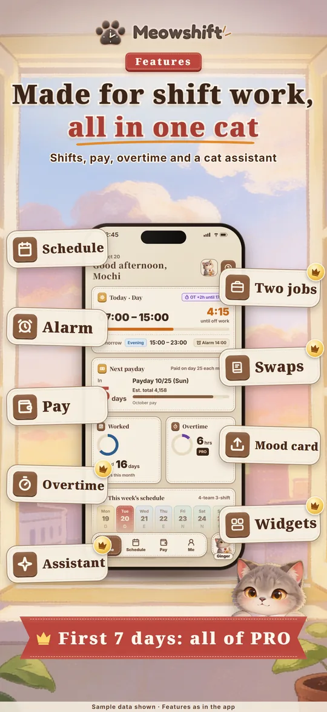
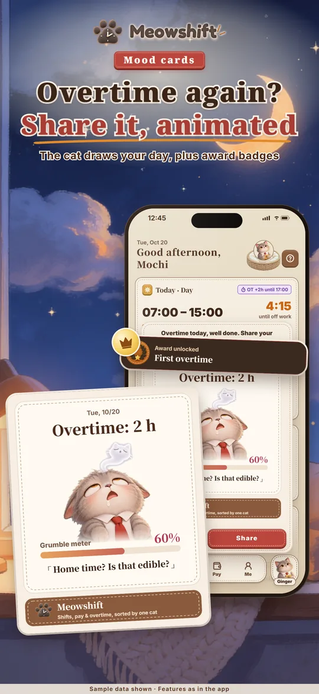

🎁 İlk 7 gün tüm PRO


Meowshift vardiyalı çalışanlar için: hemşireler, bakım personeli, fabrika ve mağaza ekipleri, güvenlik, otelcilik ve yarı zamanlı çalışanlar. Vardiyalarını gir; hangi gün çalıştığını, mesainin kaçta bittiğini ve bu ay aşağı yukarı ne kadar alacağını gör.





🎁 İlk 7 gün tüm PRO: İndirdikten sonra 7 gün boyunca tüm PRO özellikleri ücretsiz; ödeme yok, otomatik ücretlendirme yok. Sonrasında temel özellikleri ücretsiz kullanmaya devam edebilir ya da Meowshift PRO'ya abone olabilirsin.

Fiyatlar bölgeye göre değişir; geçerli fiyat App Store veya Google Play’de görünendir. Abonelik otomatik yenilenir, mağazadan istediğin zaman iptal edebilirsin.
Tahminler yalnızca bilgi amaçlıdır; kesin tutar işvereninin bordrosundadır.